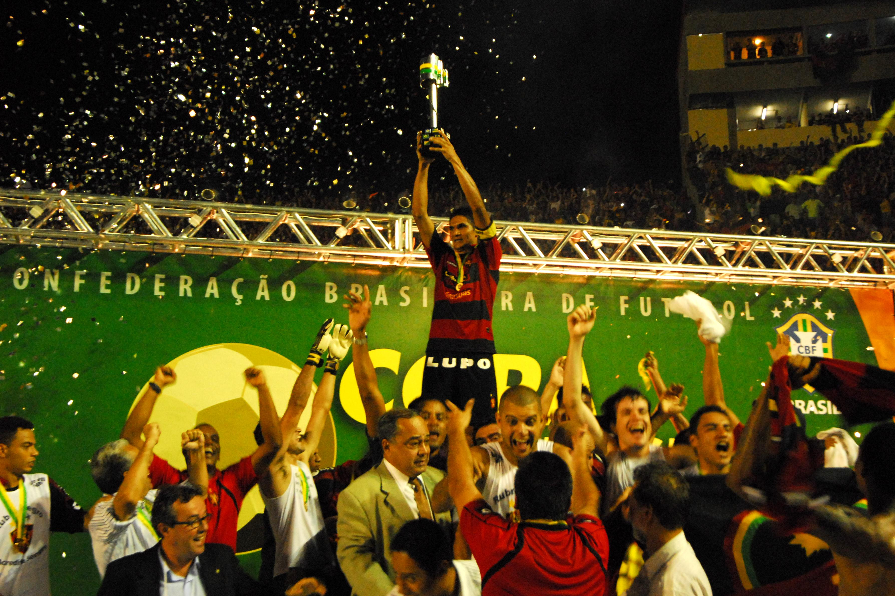

Sport Clube do Recife
O Sport Club do Recife, fundado em 13 de maio de 1905, é um dos maiores e mais tradicionais clubes de futebol do Brasil...
Acesse todo o calendário esportivo 2025 aquiSanta Cruz Futebol Clube

O Santa Cruz Futebol Clube, fundado em 1914, é um dos clubes mais tradicionais do Brasil...
Acesse todo o calendário esportivo 2025 aquiClube Náutico Capibaribe
O Clube Náutico Capibaribe, fundado em 1901, é um dos clubes mais tradicionais do futebol brasileiro...
Acesse todo o calendário esportivo 2025 aquiTabelas de Títulos
| EQUIPES | TÍTULOS | ANOS |
|---|---|---|
| SPORT | 46 | 1916, 1917, 1920, 1923, 1924, 1925, 1928, 1938, 1941, 1942, 1943, 1948, 1949, 1953, 1955, 1956, 1958, 1961, 1962, 1975, 1977, 1980, 1981, 1982, 1988, 1991, 1992, 1994, 1996, 1997, 1998, 1999, 2000, 2003, 2006, 2007, 2008, 2009, 2010, 2014, 2017, 2019, 2023,2024, 2025 |
| SANTA CRUZ | 29 | 1931, 1932, 1933, 1935, 1940, 1946, 1947, 1957, 1959, 1969, 1970, 1971, 1972, 1973, 1976, 1978, 1979, 1983, 1986, 1987, 1990, 1993, 1995, 2005, 2011, 2012, 2013, 2015, 2016 |
| NÁUTICO | 24 | 1934, 1939, 1945, 1950, 1951, 1952, 1954, 1960, 1963, 1964, 1965, 1966, 1967, 1968, 1974, 1984, 1985, 1989, 2001, 2002, 2004, 2018, 2021, 2022 |